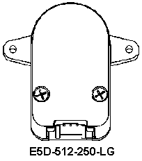
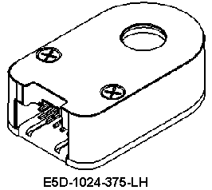
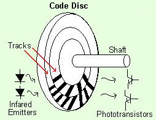
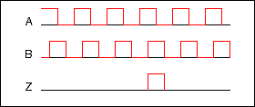
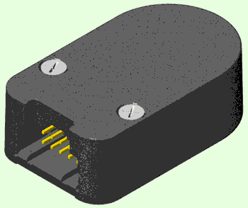
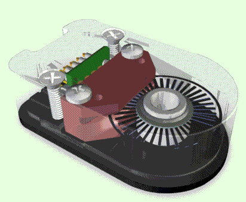
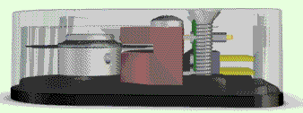
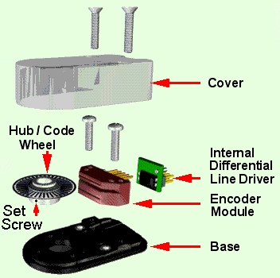
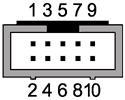

Encoder Operating Principles
Purpose
This document details the operating principles for the encoders.
Encoder Function
Encoders are used to determine the rotary or linear position or location of a device by creating a signal based on the specific location of a shaft that rotates. To accomplish this task the disc or encoder wheel is attached directly to the shaft of the device being monitored.
Encoder Types
| Beckman Coulter Part Number | Manufacturer Part Number | Application |
|---|---|---|
| 53-011123-1 |
 L = Agilent pin-out compatible G = Mounting screws pass through cover tabs No shaft hole |
|
| 53-011128-1 |
 L = Agilent pin-out compatible H = Hole for shaft Mounting screws pass through cover |
Sample Storage Module - Storage Wheel Drive Motor |
Operational Overview
A digital optical encoder is a device that converts motion into a sequence of digital pulses. By counting a single bit or by decoding a set of bits, the pulses can be converted to relative or absolute position measurements. Encoders have both linear and rotary configurations, but the most common configuration type is rotary.
- Absolute encoder: A unique digital word corresponds to each rotational position of the shaft.
- Incremental encoder: Produces digital pulses as the shaft rotates, allowing measurement of relative position of shaft. DxI uses this type of encoder for all applications. The term 'incremental' describes the type of information that the encoder sends out.
Most rotary encoders are a glass or plastic code disk with a photographically deposited radial pattern organized in tracks. As radial lines in each track interrupt the beam between a photoemitter-detector pair, digital pulses are produced.

The incremental encoder, sometimes called a relative encoder, is simpler in design than the absolute encoder. The incremental encoder consists of two tracks and two sensors. As the shaft rotates, pulse trains occur on these channels at a frequency proportional to the shaft speed, and the phase relationship between the signals yields the direction of rotation. By counting the pulses and knowing the resolution of the disk, the angular motion can be measured. The signals from the two channels are a 1/4 cycle out of phase with each other and are known as quadrature signals. Often a third output channel, called index, yields one pulse per revolution, which is useful in counting full revolutions. The index is also useful as a reference to define a home base or zero position.

A and B are placed 90° out of phase. With these two channels, the processor determines the distance traveled by the number of steps, and the direction traveled by the leading wave form. The third channel, Z, is the reference. Usually the Z channel has only one pulse per revolution or per length of the encoder, so it can be used to determine a location, rather than just an incremental number. These encoders can be either magnetic, optical, contacting, or capacitive.
The disadvantage of the incremental encoder is that it is unable to determine its location on start-up, but this problem is overcome in DxI by providing a backup voltage to power the encoder during instrument power down or loss of power. The backup power is good for only a few days, after which time, if the instrument is started, all devices containing encoders must manually be homed before initialization.
Component Locations




Encoder Features and Functions
- Two optical sensors are positioned to give two quadrature signals (90° apart) from the etched disc which provides information on direction and incremental position.
- If power is removed from the module, the absolute position is not lost because a built-in backup power system maintains the built-in storage voltage.
- When power is reapplied, the encoder indicates the position of the motors being monitored.
| Component | Function |
|---|---|
| Base | Mounting surface for encoder components. |
| Cover | Encapsulates all internal parts, keeping dust out of encoder. |
| Hub or code wheel | A round disc with a series of precise etchings on a clear disc. The etchings, when passed through a sensor, provide a sequence of on and off signals. These signals are monitored by software and provide feedback to indicate the rotational position of a device shaft. |
| Encoder module | The device containing the sensor used to count the hub or code wheel etchings. |
| Internal Differential Line Driver | Small circuit containing signal shaping electronics that produces a two-channel bouncelss TTL output. The output connector is attached to this device. |
Accuracy
- The resolution is based on the encoder lines per revolution equal to 1024 and a times four factor built into the encoder decoding algorithm for a total of 2048 counts per revolution. This count exceeds the number of steps per revolution of 400 by about 10 times. Therefore, the resolution is approximately 0.2 steps.
- The accuracy is ±1 count or ±0.2 steps which significantly exceeds the step resolution. The error band is wide enough to eliminate nuisance errors. These error bands are defined in subsystem.ini.
- Is mounted on the carousel shaft instead of on the motor. This axis uses a belt drive, therefore the encoder is placed on the driven carousel instead of the motor to ensure a meaningful position in the event of a belt breakage or slip. It uses a 4096 count per revolution encoder that with decoding provides a resolution of one part out of 16384 or 360/16384=0.0220 degrees. However, this accuracy cannot realized due to the dynamics of the motor-belt-carousel system. Software made the error band wide enough to eliminate nuisance errors. These error bands are defined in subsystem.ini.
- The encoders mounted to the motor shafts provide excellent accuracy.
Pin-Outs
Normally the pin-out information is printed on the encoder cover.

| Pin | Signal / Voltage |
|---|---|
| 1 | No Connection |
| 2 | + 5 VDC |
| 3 | Ground |
| 4 | No Connection |
| 5 | A- Channel |
| 6 | A+ Channel |
| 7 | B- Channel |
| 8 | B+ Channel |
| 9 | Index - |
| 10 | Index + |